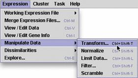
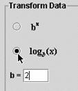
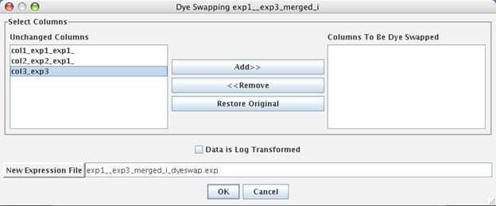

Manipulate Data
Manipulating data is not as bad as it sounds. This
option allows you to choose from five options. These
options do NOT alter your original data, they simply allow
you to process the data further prior to clustering or
exploring your data.

Transform (Control Shift T)
A standard process you should perform is transforming your data before performing any analysis (exploring or calculating dissimilarities and clustering). You want to log-transform your ratios so you eliminate any fractions. It is important to get all ratios on the same scale of magnitude. For example, if a gene is repressed 16 fold, the ratio will be 0.0625 while a gene that is induced 16 fold will have a ratio of 16.0. Before analyzing your data, you should log-transform your data. After transformation (typically log2), the two genes would be altered (-4 vs. +4) with equal magnitude but in opposite directions. See Instructor's Guide for more information. You should explore after transforming, but may or many not want to normalize before exploring (see below). If you want to "un-transform" your transformed data, you can use the exponent function bx.
Normalize (Control Shift N)
This process takes your (transformed) ratios and corrects for the magnitude of a gene's ratios and the variation among each gene's ratios. Normalization is not appropriate for ratio data, but is useful for absolute expression values. See Instructor's Guide for more details.
Reorder/Delete Columns (Control Shift L)
If you have merged data from many microarrays (e.g. a time course experiment), you may want to study only certain portions of your merged data independently. Limiting data allows you to select column headings and retain these selected data for analysis in a "limited data set". Your original merged file is left unaltered and a new file is created. The new expression file will terminate with the name "x_limted.exp" where x would be the original expression file name.
Filter (Control Shift F)
Filtering allows you to remove from further consideration genes that do or do not meet user-defined criteria. The image below shows you the types of filters that can be applied. Filtering can be performed in this menu, or by saving query results as expression files from the Exploring window (see below).
Scramble
Gives three different methods for creating a gene expression file with the same exact numbers as your current file, but in random order. Randomization can help indicate whether the patterns found through exploration and clustering are real effects of the experimental conditions.
Dye Swap Data Manipulation (Control Shift D)

If you swapped the red and green images while building your expression file, you can swap the ratios after segmentation by choosing "Dye Swap Data Manipulation" from the "Expression" menu. From this window, you can choose columns of the working expression file to be dye swapped. If the "Data is Log Transformed" checkbox is unchecked, the ratios of the selected columns will be reciprocated to achieve the new values. If the "Data is Log Transformed" checkbox is checked, the data will be negated to achieve the new values.